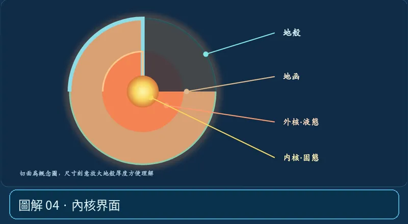

第 02 單元｜圖解 4/6｜課本 p.68–71
內核界面
約 5,150 km 深度進入內核。內核主要為固態；地球中心深度約 6,371 km。
① 看一眼② 操作圖③ 自己推理④ 揭開解答
🔬 這張圖，請自己動手試
操作圖上方的頁籤、滑桿或按鈕；圖片也能左右滑動放大觀看。
互動圖解 · 內核界面

原創 SVG 地科教學模型，方便理解，非真實比例、非即時地震資料；互動無法載入時仍有靜態圖。
STEP 01 · 先觀察
👀 眼睛先找線索
觀察地球切面最內部的黃色內核，再到波速圖找約 5,150 公里深度的界面。
💡 為什麼是這樣？
高壓讓以鐵、鎳為主的內核保持固態；外核則是液態。兩者物態不同，雖然都屬地核。
🎯 換個問法想一題
外核與內核都由金屬構成，所以都一定是液體嗎？
我想好了，點開看答案 ↓
不對。外核為液態，內核主要為固態。
⚡ 一句記住：第三條分界線